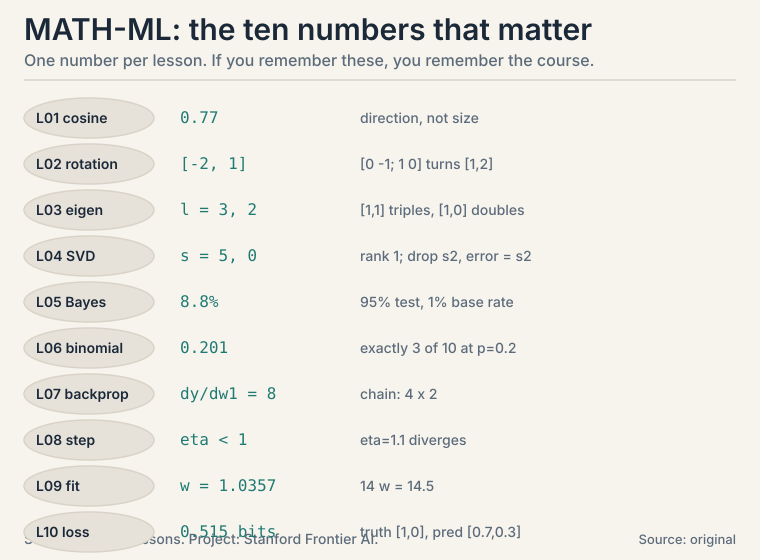
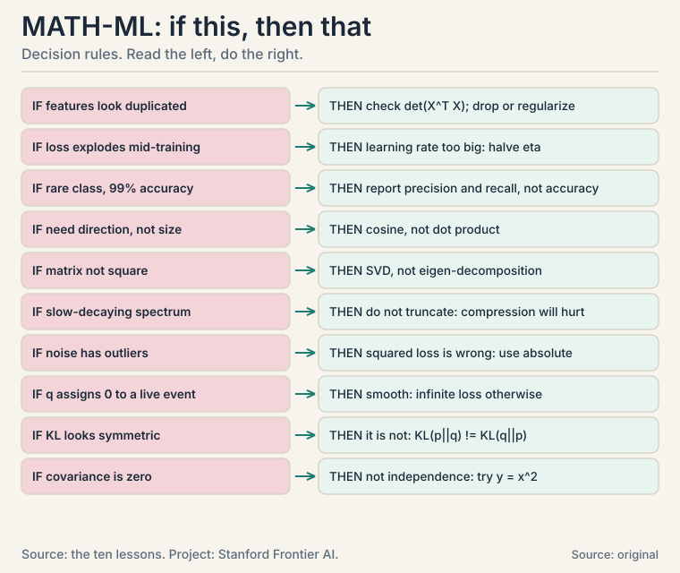
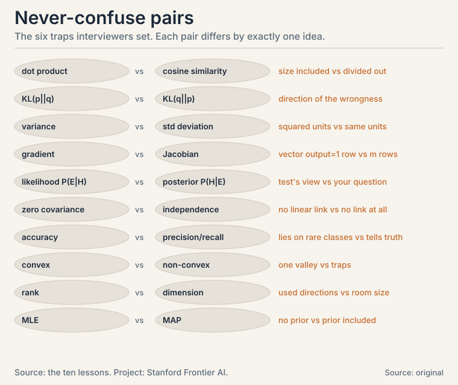

MATH-ML Cheatsheet
The ten numbers

Vectors (L01)
dot product: x . y = x1*y1 + ... + xn*yn norm: ||x|| = sqrt(x1^2 + ... + xn^2) cosine similarity: (x . y) / (||x|| * ||y||) in [-1, 1]
Dot product mixes agreement with size. Cosine divides size out. Parallel = 1, perpendicular = 0, opposite = -1. Mnemonic: “Dot dives deep, cosine compares clean.” Dot keeps everything. Cosine cleans out the size.
Matrices (L02)
(Mv)_i = row_i(M) . v (rows dot the vector) Mv = v1*col_1 + ... + vn*col_n (mix of columns) (AB)^T = B^T A^T projection of b onto a: ((a . b) / (a . a)) * a
Columns of M are where the axes land. Projection splits any vector into along-part plus perpendicular leftover. Never-confuse: AB != BA (order matters). (AB)^T = B^T A^T (order flips).
Eigen-decomposition (L03)
Av = lambda v (direction kept, scaled by lambda) det(A - lambda I) = 0 (characteristic equation) A = V Lambda V^-1 (change basis, stretch, change back)
Symmetric matrices: eigenvectors perpendicular, always complete. Covariance eigenvectors = PCA directions. Eigenvalues = variance per direction. Mnemonic: “Eigenvectors stand still while the matrix moves everything else.”
SVD (L04)
A = U Sigma V^T (rotation, stretch, rotation)
sigma_i = sqrt(eigenvalues of A^T A)
rank = count of nonzero sigma_i
best rank-k approx: keep top k pieces; error = sigma_{k+1}
||A||_F = sqrt(sum of a_ij^2) (Frobenius norm)
Eckart-Young: truncating the SVD is the optimal low-rank approximation. Works on every matrix, square or not. Never-confuse: rank (used directions) vs dimension (room size).
Probability (L05)
P(A|B) = P(A and B) / P(B) Bayes: P(H|E) = P(E|H) * P(H) / P(E) E[X] = sum of x_i * p_i Var(X) = E[(X - E[X])^2] = E[X^2] - (E[X])^2 E[X + Y] = E[X] + E[Y] (always, no independence needed)
Posterior = likelihood x prior, renormalized. Base rates dominate rare-event posteriors: 95%-accurate test, 1% prevalence -> 8.8% posterior. Mnemonic: “Prior times likelihood, renormalized.” Say it before every Bayes computation.
Distributions (L06)
Bernoulli(p): mean p, var p(1-p) Binomial(n,p): P(K=k) = C(n,k) p^k (1-p)^(n-k); mean np, var np(1-p) Gaussian: 68-95-99.7 rule (1, 2, 3 sigma) MLE: maximize P(data | params); Bernoulli MLE = sample mean Cov(X,Y) = E[(X-E[X])(Y-E[Y])] Var(X+Y) = Var(X) + Var(Y) + 2 Cov(X,Y)
Gaussian noise -> least squares is MLE. Zero covariance != independence. Never-confuse: likelihood P(E|H) vs posterior P(H|E). The test’s view vs your question.
Calculus (L07)
partial: df/dx freezes all other variables gradient: grad f = [df/dx1, ..., df/dxn] (steepest increase) Jacobian: J_ij = dg_i/dx_j (m x n for R^n -> R^m) chain: d/dx f(g(x)) = f'(g(x)) * g'(x); Jacobians multiply in order backprop: one backward sweep; each weight gets local deriv x incoming signal
Backprop toy: x=2, w1=3, w2=4 -> dy/dw2 = 6, dy/dw1 = 8. Mnemonic: “Backward brings the signal.” Each layer multiplies its local derivative by what arrives from downstream.
Optimization (L08)
convex: f'' >= 0; Hessian eigenvalues >= 0 (one valley) GD: x_new = x_old - eta * grad stable: eta < 2 / L (L = max curvature) SGD: noisy cheap steps; momentum: 0.9 running average; Adam: per-coordinate adaptive logistic loss: -[y log p + (1-y) log(1-p)], convex in w precision = true positives / predicted positives recall = true positives / actual positives
GD toy on (x-3)^2, eta=0.1: 0 -> 0.6 -> 1.08 -> 1.464. Loss x0.64 per step. eta=1.1 diverges: 9.0 -> 26.87. Decision rule: loss explodes -> halve eta first, ask questions later.
Least squares (L09)
min ||Xw - y||^2 normal equation: X^T X w = X^T y w = (X^T X)^-1 X^T y (when invertible) ridge: (X^T X + lambda I) w = X^T y (always invertible) geometry: prediction = projection of y onto column space of X
Spring toy: w = 14.5/14 = 1.0357. Residual perpendicular to columns: X^T(Xw - y) = 0. Singular X^T X -> infinite solutions. Never-confuse: closed form O(d^3) vs iteration: economics, not math, chooses.
Information theory (L10)
surprise: -log2 p entropy: H = -sum p log2 p (fair coin: 1 bit) KL: KL(p||q) = sum p log2(p/q) (>= 0, asymmetric) cross-entropy: H(p,q) = -sum p log2 q = H(p) + KL(p||q) perplexity: 2^(cross-entropy)
Classification loss: truth [1,0], pred [0.7,0.3] -> 0.515 bits. Confident-wrong [0.01,0.99] -> 6.64 bits. Never let q hit zero: smooth. Mnemonic: “Cross-entropy is the bill. KL is the overcharge.” Total = irreducible uncertainty + your wrongness.
Decision rules: if this, then that

Never-confuse pairs

- dot product vs cosine similarity: size included vs divided out
- KL(p||q) vs KL(q||p): direction of the wrongness
- variance vs standard deviation: squared units vs same units
- gradient vs Jacobian: one output row vs m rows
- likelihood P(E|H) vs posterior P(H|E): test’s view vs your question
- zero covariance vs independence: no linear link vs no link at all
- accuracy vs precision/recall: lies on rare classes vs tells the truth
- convex vs non-convex: one valley vs traps
- rank vs dimension: used directions vs room size
- MLE vs MAP: no prior vs prior included
Sources
- SYNTHESISSynthesized from MATH-ML L01-L10